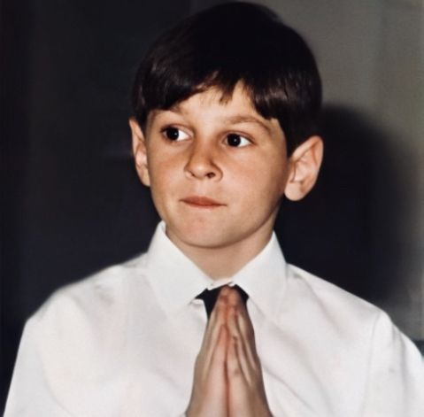
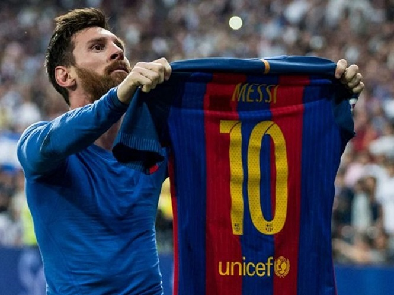
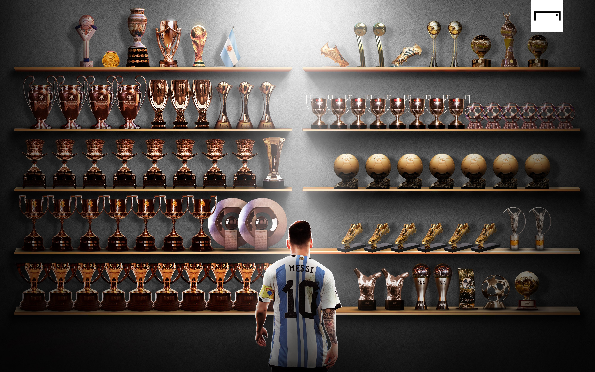
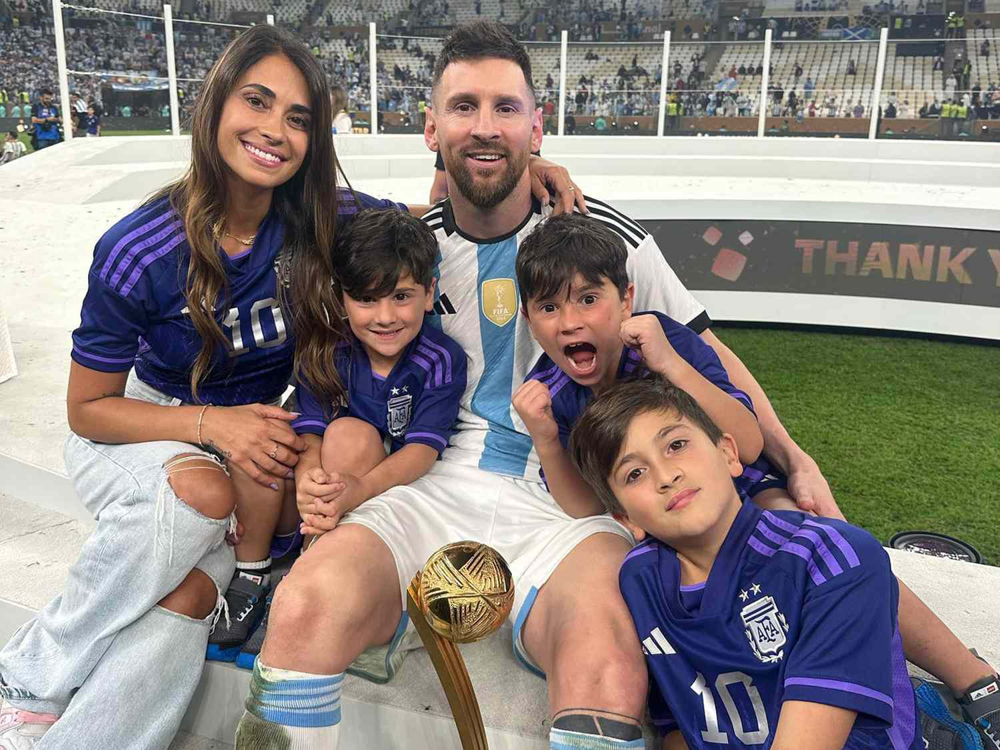

Lionel Messi
Cầu thủ xuất sắc nhất mọi thời đại
Lionel Messi
Lionel Messi, hay còn được biết đến với biệt danh M10 hoặc El Pulga, là một trong những cầu thủ bóng đá xuất sắc nhất đương đại cũng như trong lịch sử bóng đá. Trong sự nghiệp của mình, anh đã gặt hái được vô số vinh quang ở cấp độ câu lạc bộ cũng như đội tuyển quốc gia, cùng với tầm ảnh hưởng của mình đã vượt qua rào cản bóng đá để đến với mọi người trên thế giới
I.Tiểu sử

Lionel Messi, tên đầy đủ là Lionel Andrés Messi,sinh ngày 24 tháng 6 năm 1987 tại Argentina. Từ thưở bé, Messi đã bộc lộ tài năng bóng đá thiên bẩm của mình. Tuy nhiên, ông trời lại trêu đùa anh khi Messi mắc phải căn bệnh thiếu hoocmon phát triển hiến gắp, ảnh hưởng đến thể chất và sức khỏe của bản thân. Điều trị căn bệnh này vô cùng tốn kém và gần như không đội bóng nóng ở Argentina có thể chịu chi ra số tiền lớn chỉ để chữa bệnh cho một tài năng trẻ như vậy
Tuy nhiên, định mệnh đã gọi tên anh khi đội bóng tên tuổi- gã khổng lồ trong làng túc cầu- Fc Barcelona đã chấp nhận trả số tiền điều trị bệnh cho anh và đưa anh về với lò đào tạo trẻ Casino của họ. Từ đó câu chuyện huyền thoại của Messi bắt đầu được viết lên
II. sự nghiệp

Trong suốt sự nghiệp huy hoàng của mình, Messi đã đạt được vô số thành tích đáng nể, dưới đây là bảng tổng kết thành tích của siêu sao người Argentina
| Năm |
Câu Lạc Bộ |
Danh Hiệu Quan Trọng |
| 2000 |
Barcelona (đội trẻ) |
|
| 2003 |
Barcelona |
|
| 2005 |
Barcelona |
La Liga, Supercopa de España |
| 2006 |
Barcelona |
UEFA Champions League, Supercopa de España |
| 2007 |
Barcelona |
La Liga |
| 2008 |
Barcelona |
UEFA Champions League, La Liga, Copa del Rey |
| 2009 |
Barcelona |
UEFA Champions League, La Liga, Copa del Rey, Quả Bóng Vàng FIFA |
| 2010 |
Barcelona |
La Liga, UEFA Super Cup, FIFA Club World Cup |
| 2011 |
Barcelona |
La Liga, UEFA Champions League, FIFA Club World Cup, Quả Bóng Vàng FIFA |
| 2012 |
Barcelona |
La Liga, Copa del Rey |
| 2013 |
Barcelona |
La Liga, Supercopa de España |
| 2014 |
Barcelona |
La Liga, Copa del Rey |
| 2015 |
Barcelona |
La Liga, UEFA Champions League, FIFA Club World Cup, Quả Bóng Vàng FIFA |
| 2016 |
Barcelona |
Copa del Rey, Supercopa de España |
| 2017 |
Barcelona |
Copa del Rey, Supercopa de España |
| 2018 |
Barcelona |
La Liga, Supercopa de España |
| 2019 |
Barcelona |
La Liga, Supercopa de España, Quả Bóng Vàng FIFA |
| 2020 |
Barcelona |
Copa del Rey, Supercopa de España |
| 2021 |
Paris Saint-Germain |
Chuyển đến Paris Saint-Germain, Quả Bóng Vàng FIFA |
| 2021 |
Đội tuyển Argentina |
Copa America |
III.Danh hiệu

Messi Đã dành được rất nhiều danh hiệu hiệu cao quý, chúng ta có thể kể đến như:
- - 10 Chiếu giày vàng
- - 7 Quả bóng vàng
- - 5 UEFA Champion League
- - 10 Laliga
- - 1 Copa America
- - 1 World Cup
IV. Cuộc sống ngoài sân cỏ

Lionel Messi thành công cả trong sân bóng và cuộc sống ngoài đời. Anh có gia đình hạnh phúc với người vợ Antonella Roccuzzo- mối tình đầu tiên và duy nhất của anh. Gia đình Messi cũng có thêm 3 cậu con trai lần lượt là Thiago Messi Roccuzzo, Mateo Messi Roccuzzo và Ciro Messi Roccuzzo. Hiện tại, gia đình Messi đang sinh sống tại New York
Ngoài ra, anh con tích cực tham gia thiện nguyện. Messi có quỹ từ thiện mang tên mình và đã quyên góp rất nhiều cho các lĩnh vực như giáo dục và y tế